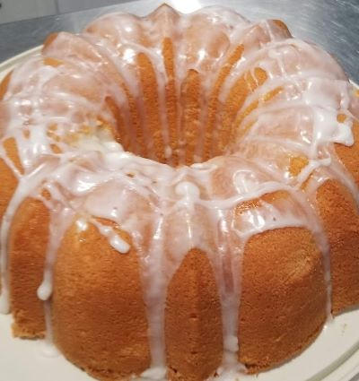

Pound Cake

Description
This delicious buttery poundcake is a family recipe that has been passed down though three generations.
If you are looking for something a little more you can also add fresh blueberries or a flavored glaze.
Ingredients
- 3c Cake flour
- 3c Sugar
- 1/4 tps. Baking Soda
- Pinch of Salt
- 1c Butter
- 6 Eggs
- 1 tps. Vanilla
- 8oz Sour Cream
Steps
- Preheat oven to 300°
- Cream Sugar and butter
- Add eggs one at a time
- Combined Sour Cream and Baking Soda
- Add salt to flour
- Alternate flour and Sour cream mixing it with butter mixture
- Add Vanilla
- Bake for 1 to 1 hour and 15 minutes